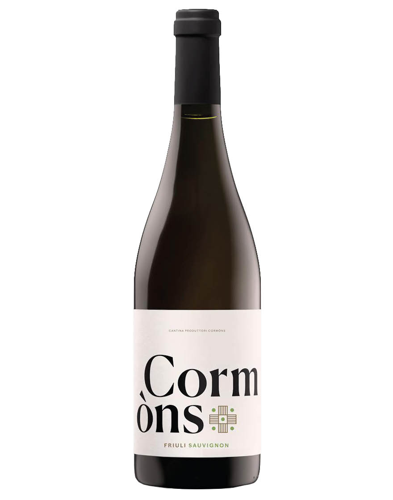

Friuli Sauvignon Blanc DOC-Friuli - Cantina Produttori Cormòns

É o vinho da linha Trumpeter de maior sucesso no Brasil. Produzido com uvas de vinhedos de altitude (1200 metros), é sedoso e frutado com bom aporte dos aromas das barricas, excelente frescor e aromas sedutores de violetas, ameixas, framboesas, chocolate e cravo.
O frescor e o refinamento deste vinho da linha Trumpeter dão a ele passe-livre para harmonizar com pratos mais elaborados e complexos. Carnes de caça temperadas (coelho, codorna) e aves com especiarias são excelentes companhias.